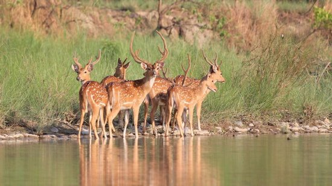

Conmebol
Copa America
2021
Watch Live


Neymar Jr
Neymar came into prominence
at Santos, where he made his professional debut aged 17.

Lionel Messi
Lionel Messi came into prominence
at Santos, where he made his professional debut aged 17.

Cristiano Ronaldo
Cristiano Ronaldo came into prominence
at Santos, where he made his professional debut aged 17.

Paulo Dybala
Paulo Dybala into prominence
at Santos, where he made his professional debut aged 17.

Mesut Ozil
Mesut Ozil came into prominence
at Santos, where he made his professional debut aged 17.

Mauro Icardi
Mauro Icardi came into prominence
at Santos, where he made his professional debut aged 17.

Di Maria
Di Maria came into prominence
at Santos, where he made his professional debut aged 17.

Kylian Mbappé
Kylian Mbappé came into prominence
at Santos, where he made his professional debut aged 17.

Mohamed Salah
Mohamed Salah came into prominence
at Santos, where he made his professional debut aged 17.

Harry Kane
Harry Kane came into prominence
at Santos, where he made his professional debut aged 17.

Kevin De Bruyne
Kevin De Bruyne came into prominence
at Santos, where he made his professional debut aged 17.

Philippe Coutinho
Philippe Coutinho came into prominence
at Santos, where he made his professional debut aged 17.
About yourself
Hey, this is my homepage, so I have to say something about myself.
Sometimes it is hard to introduce yourself because you know
yourself so well that you do not know where to start with.If you want to know.
Hey, We are Deer.
Deer live in a variety of biomes, ranging from tundra to the tropical rainforest. While often associated with forests, many deer are ecotone species that live in transitional areas between forests and thickets (for cover) and prairie and savanna (open space).
